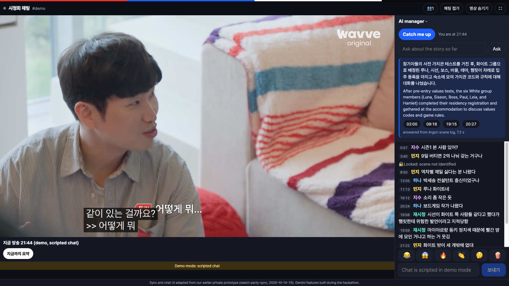
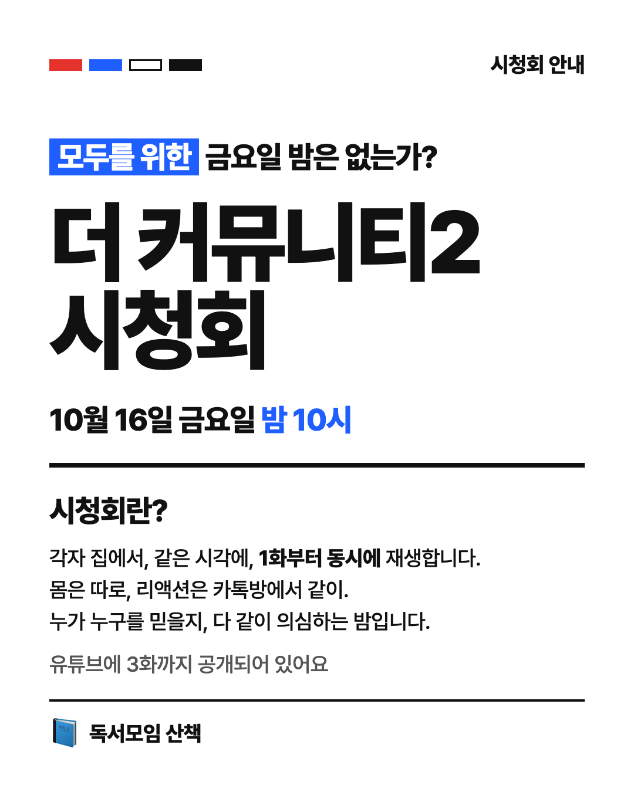
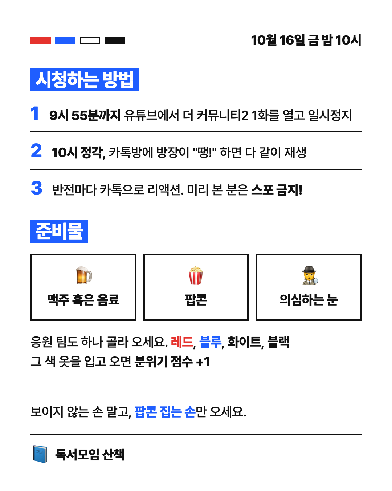
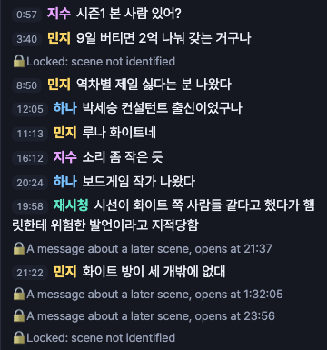

Watch Party
Host
Join late. Still watch together.
The AI manager for YouTube watch parties, built on Gemini.

I watch a lot of streams
Game streams like 풍월량 and 서새봄 are part of my day.
Creators
Something new every day. One streamer said finding it takes most of the prep.
Me, teaching live
Answering chat mid-lecture breaks my flow.
Our book club wanted a watch party
We picked The Community 2, all at home, play at 22:00, react together in group chat.
Rule 3 on our own invite: “If you’ve seen it, no spoilers!”


Watch-alongs already exist
CHZZK
Licensed watch-alongs since 2024-07.
SOOP
Watch-alongs of licensed sports, esports and shows.
YouTube Premieres
Works like a live show: one time slot, live chat.
But chat spoils it
Streamers spend the show guarding the chat.
In the title
“스포금지” (no spoilers) written into a SOOP watch-along title
By hand
Mods are told to delete spoilers from chat
Our invite too
“If you’ve seen it already, no spoilers!”
Watching and talking together doubles the fun.
Mass media became many channels. We rarely sit down at the same moment anymore.
Not everyone makes it at 22:00
A parent joins at 22:10 after putting the kids to bed.
Late joiners usually just leave.
We unlock chat by the scene it talks about,
not the time it was typed.
 Twitch Twitch | SOOP | YouTube Premieres | CHZZK | Watch Party Host | |
|---|---|---|---|---|---|
| Watch together | X | O | O | O | O |
| Recap for late joiners | X | △ live now | X | X | O from the video |
| Answers only from what has aired | X | X | X | X | O |
| Chat matched to the video time | X | X | △ replay | X | O |
| Spoilers hidden by scene | X | X | X | X | O |
| Anyone hosts YouTube like TV | X | X | X | X | O |
Join late, get caught up to what has aired
Spoilers wait for their scene
A rewatcher writes about a later scene. Gemini finds the scene the line talks about and keeps it locked until that scene airs.
Safe chat stays visible. If the scene can’t be found, the line stays locked.

Opens at 21:37, when that scene airs
One broadcast clock, two rules
Gemini 4 Argon
watches the episode and writes a scene log
Flash re-checks
3 random clips per 5-minute part
Argon looks again
only where a check disagrees
Used for you
Catch-up and answers come only from scenes already aired.
Locked until it airs
Chat about later scenes opens when they air.
Three Gemini models, one job each
Gemini 4 Argon
Watches the episode from its YouTube URL in 5-minute parts and writes the scene log.
Gemini 3.8 Flash
Re-checks clips against the log. Answers and catch-ups from aired scenes only.
Gemini 3.5 Flash-Lite
Reads each chat line and finds the scene it talks about.
scenes, episode 1, first 30 min
checks disagreed; Argon fixed 1
catch-up time, measured 4 to 12 s
Tonight, then creators
Tonight 22:00
Our book club watches The Community 2 with it.
Next
An AI manager for creators’ watch-alongs.
Then
An agent that answers my own live-lecture chat.
Join late. Still watch together.
github.com/ggplab/watch-party-host